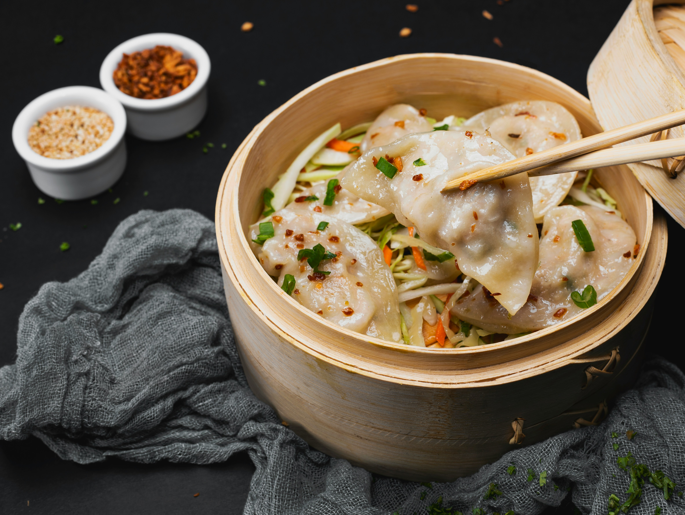

Dumplings

My girlfriend requested a recipe for Dumplings
Ingredients
- 1 cup all-purpose flour
- 2 teaspoons baking powder
- 1 teaspoon white sugar
- ½ teaspoon salt
- 1 tablespoon butter or margarine
- ½ cup milk
Directions
- Gather the ingredients.
- Stir together flour, baking powder, sugar, and salt in a bowl.
- Cut in butter until mixture is crumbly. Stir in milk and mix until a batter forms that is thick enough to be scooped with a spoon.
Allow batter to rest for 3 to 5 minutes.
- Drop batter by spoonfuls into boiling stew or soup.
Cover and simmer without lifting the lid for 15 minutes. Serve.
- Serve hot and enjoy!